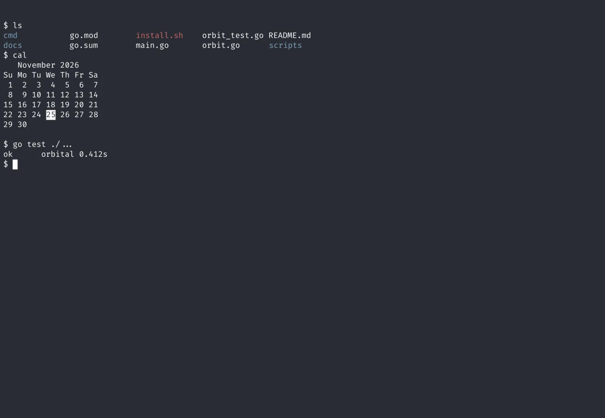
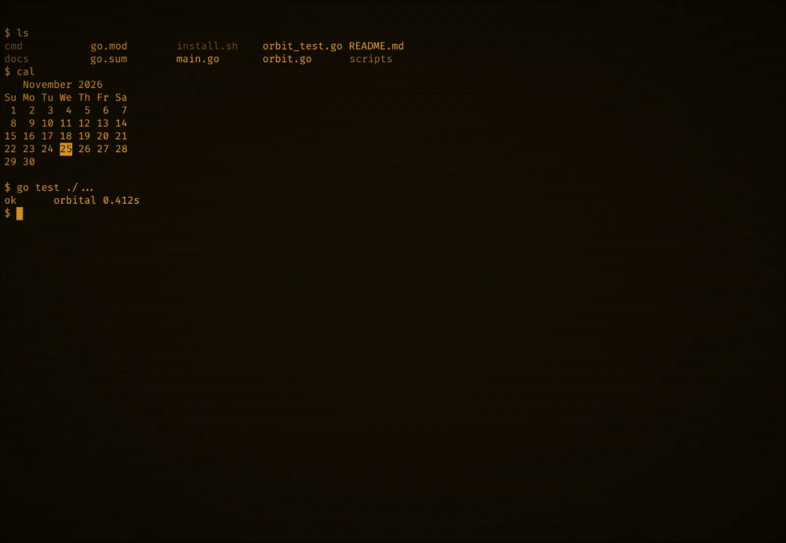

Install
curl -fsSL https://raw.githubusercontent.com/nullentropy/caution-term/main/install.sh | shThis installs Caution Term.app in /Applications. It needs macOS 13 or newer. Releases are also on the releases page.
Keys
| Cmd+N | New window |
| Cmd+T | New tab |
| Cmd+W | Close tab |
| Cmd+Shift+] / [ | Next / previous tab |
| Cmd+C / V | Copy the selection / paste |
| Cmd+K | Clear scrollback |
| Cmd+= / - / 0 | Bigger / smaller / default text size |
| Cmd+] / [ | Next / previous shader |
| Shift+Page Up / Page Down | Scroll back / forward a page |
Other keys go to the program. Option is Meta.
Shaders

Build from source
Needs Go 1.26 or newer, the Xcode Command Line Tools, and a checkout of caution at ../caution.
go run . # run it
scripts/app.sh # build dist/Caution Term.appThe term package can be used to build other apps around a terminal program. Caution Emacs uses it. See the README.